Paying for public transport with a QR code
Cut the payment flow from nine screens to three and 20 seconds from every ride. Once payments were back to baseline, a bonus campaign on top grew riders paying in our app by 17%.
About
Kazakhstan's largest mobile operator, with 10.5M+ subscribers, part of the national telecom group Kazakhtelecom. activ is its consumer brand.
- MAU
- 1.5M+
- Rating
- 4.0
Context
On public transport in Kazakhstan people can pay with cash, a transport card, SMS or a QR code. Cash costs more, SMS is awkward, and not everyone has a transport card.
The fastest options are a transport card or a QR payment: open a local app that supports it and pay. In our app that experience was far from smooth.
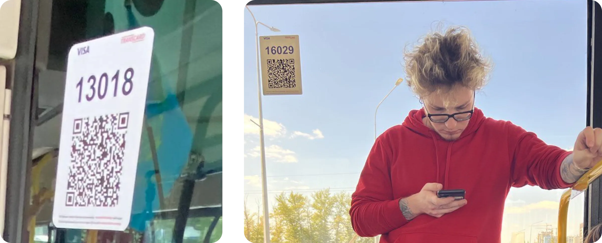
Problem
More than people in Astana pay for transport with a QR code in our app. In two months successful payments fell by , even after accounting for external factors.
Stakeholders asked us to find out why and gave us full support to fix the root cause.
My role
Product Designer, end to end. Research team of three: two designers and a UX researcher; I was the only designer on the solution.
I audited the 9-screen flow and rode buses in Astana with riders to time real payments. Then I designed the new 3-screen flow on my own, from wireframes to the final prototype, and tested it with the researcher in an unmoderated study and field sessions. A crash we caught on the bus went straight to engineering and got prioritised.
Goals
- Bring back steady growth in successful transport payments
- Find and remove the main blocker in the payment flow
- Audit the current functionality and propose improvements
- Run usability research with real users
- Watch how people actually pay on public transport
UX audit
- 9 screens from the home page to a paid ride
- Backend-driven details that meant nothing to users
- The same information repeated across screens
- A timer whose purpose nobody understood
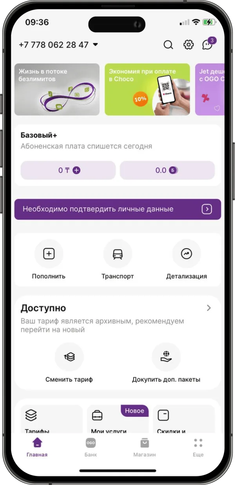
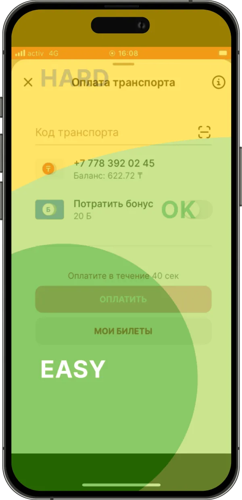
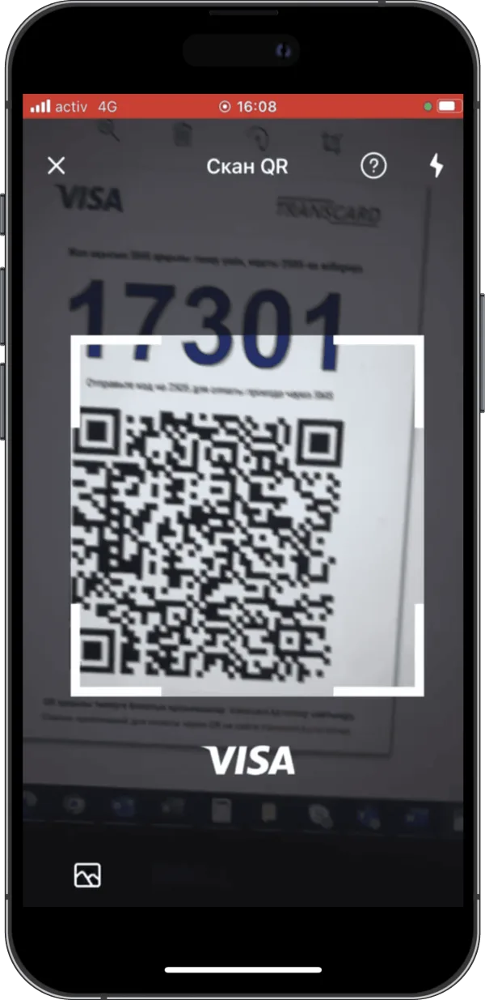
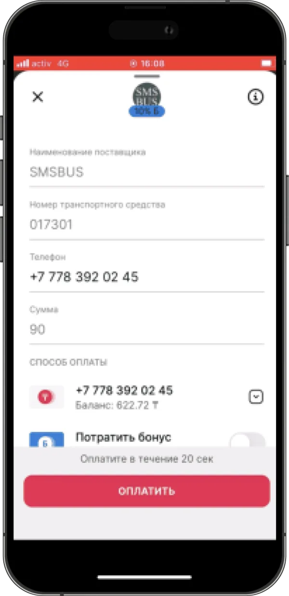
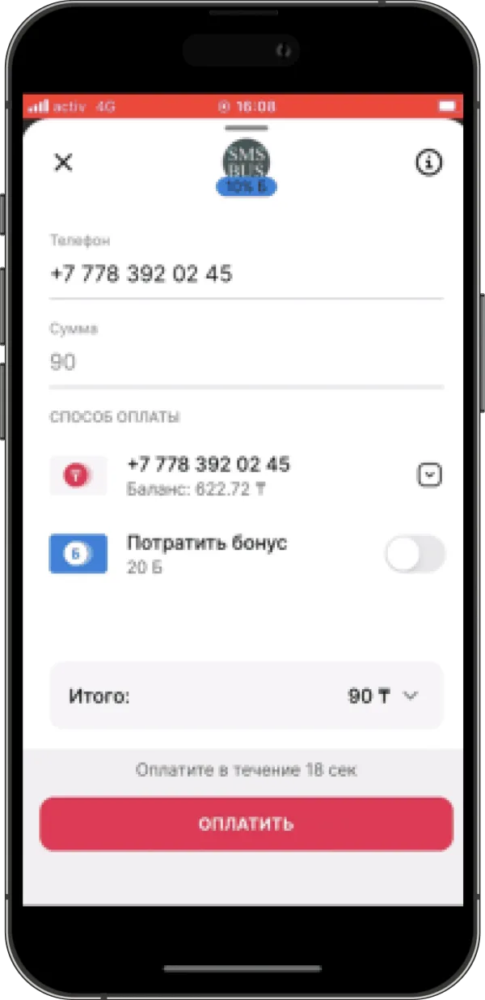
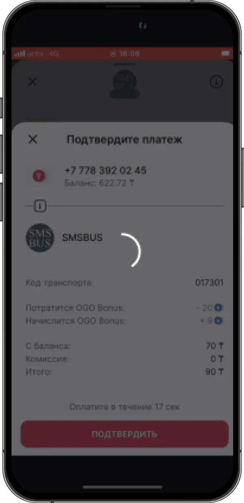
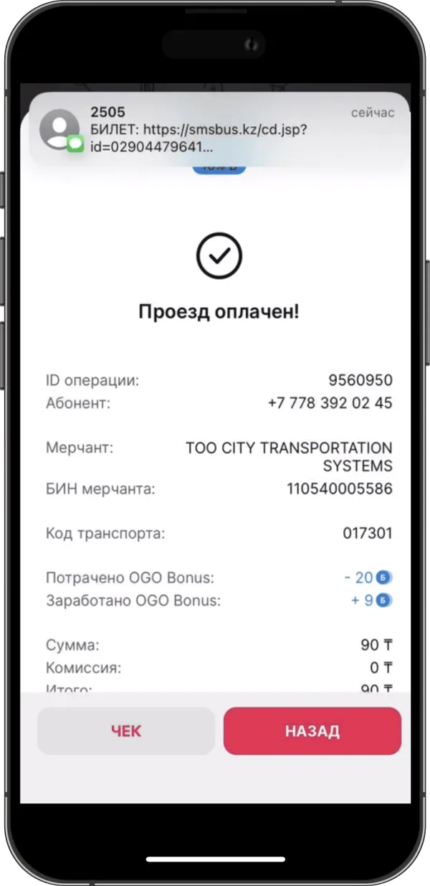
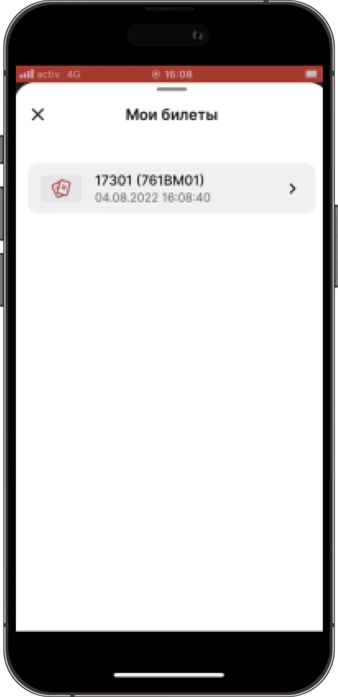
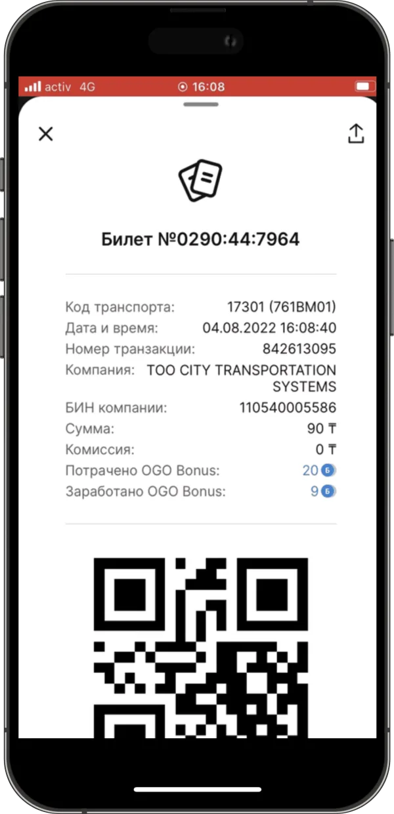
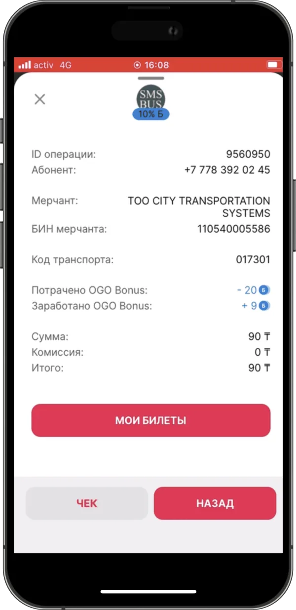
Research
We rode buses in Astana with real users, watched them pay and timed every step.
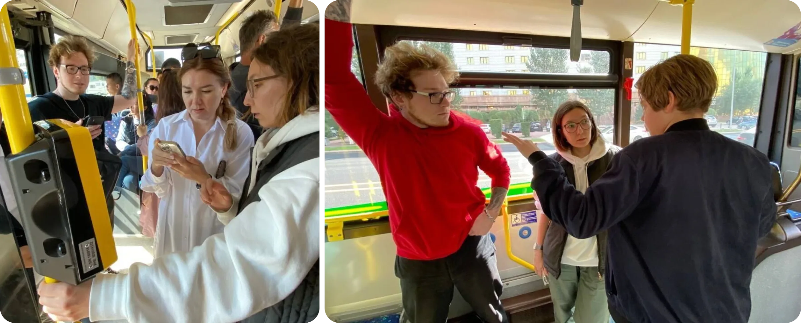
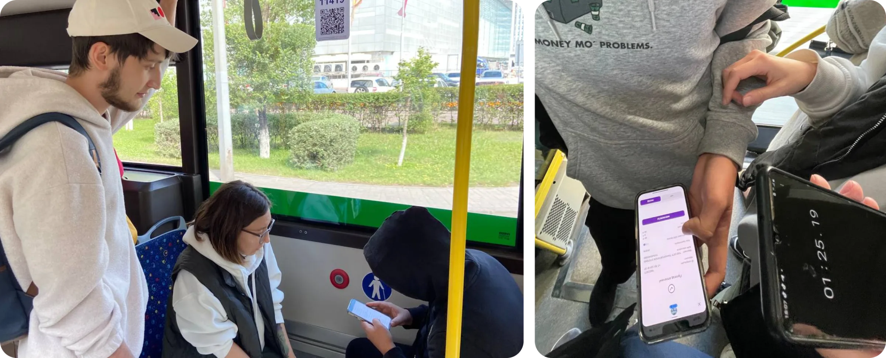
Usability findings
An average payment took 55 seconds — almost 4× slower than our main competitor. Some users could not finish the payment at all.
Key insights
- The timer is the transport operator's requirement against fare evasion — it can't be removed without breaking the contract
- Manual entry is a fallback for when the QR won't scan — every bus has its own code — but on many buses the operator blocks it
- In 95% of the payments we observed, people scanned the QR rather than typing the code
- One user's app crashed mid-payment — we reported it straight away and engineering prioritised the fix
Field observations
How 166 riders paid during our field sessions:
Solution
- Three screens instead of nine: scan → confirm → ticket
- Critical crashes fixed with a backend and frontend refactoring
- Average time to get a ticket cut by 20 seconds
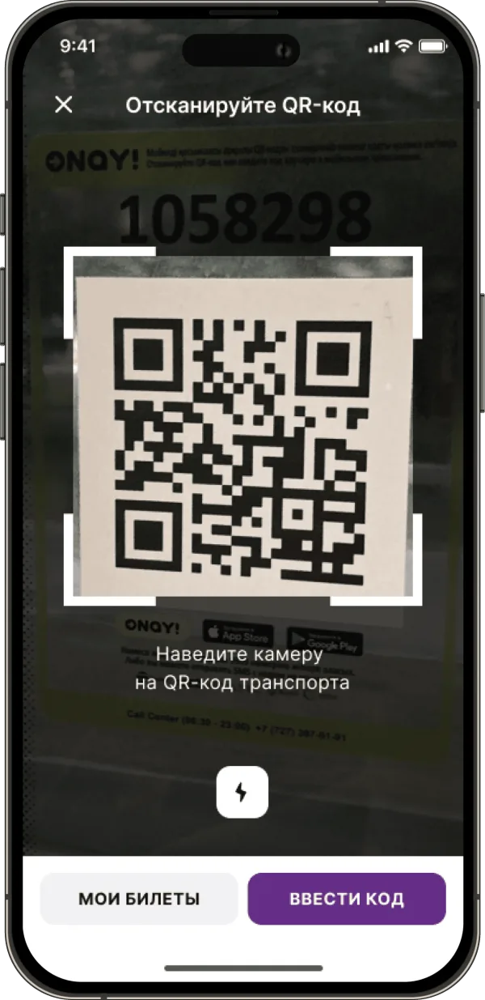
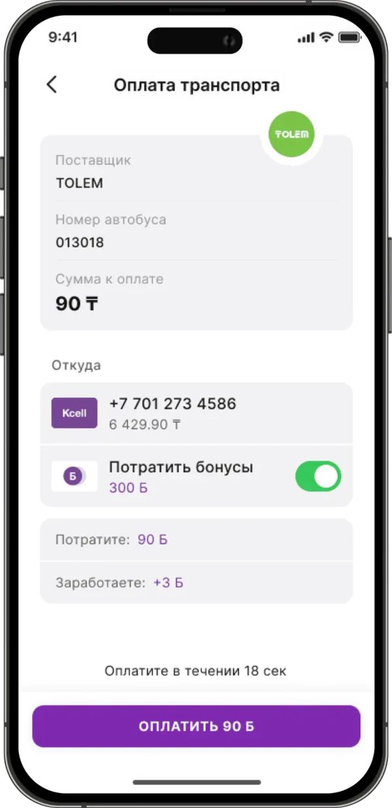
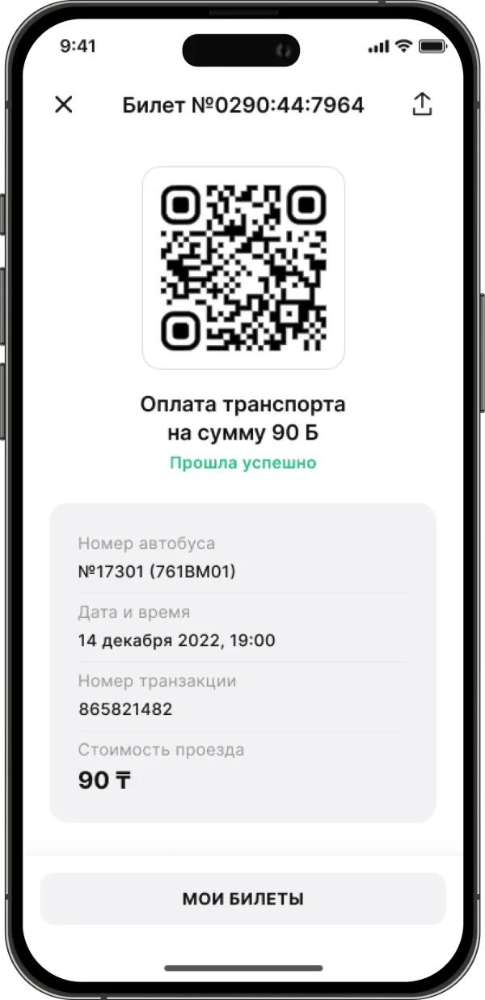
Validation
QuantitativeFabuza
- 1,000+
- SMS invitations
- 2
- language versions
- 143
- responses
- 40
- users completed tasks
Qualitative
- 10
- active transport users
- 5
- hypotheses tested
- 2
- days of field research
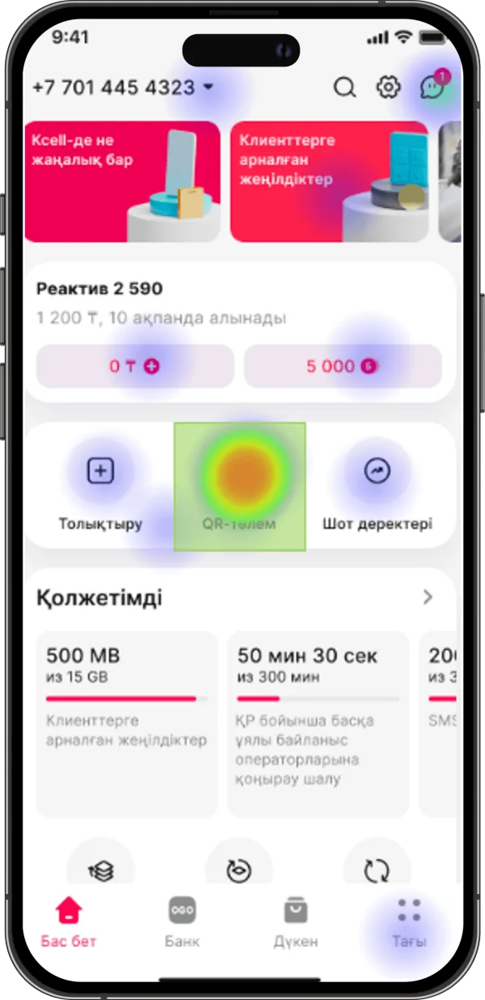
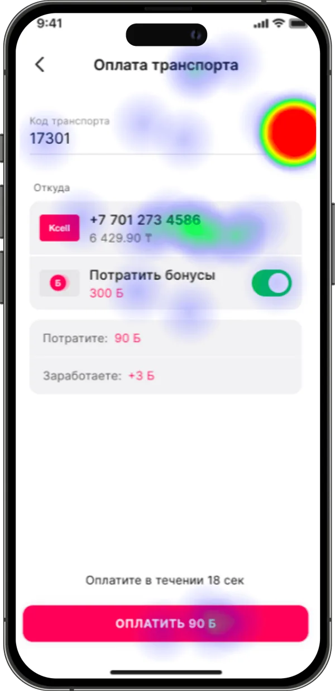
Results
Within two months after the release, payments recovered to the baseline.
Once the flow was stable, the business launched a bonus campaign for transport payments. Riders paying in our app in Astana grew by 8%, and over the following months by 17%.